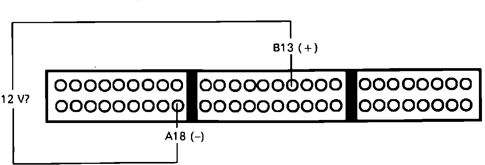

Starter Switch Signal Circuit Troubleshooting
Starter Switch Signal Testing:

1. Install test harness between ECU and connector. If test harness is not available, carefully backprobe wires at ECU connector.
2. Measure voltage between B13 and A18 with the ignition switch in the start position.
Battery voltage, proceed to next step.
Not battery voltage, proceed to step 4.
3. Starter signal normal, no further testing required.
4. Inspect fuse #13 in underdash fuse box, if fuse is OK check for open in BLK/WHT wire between ECU terminal B13 and fuse box.